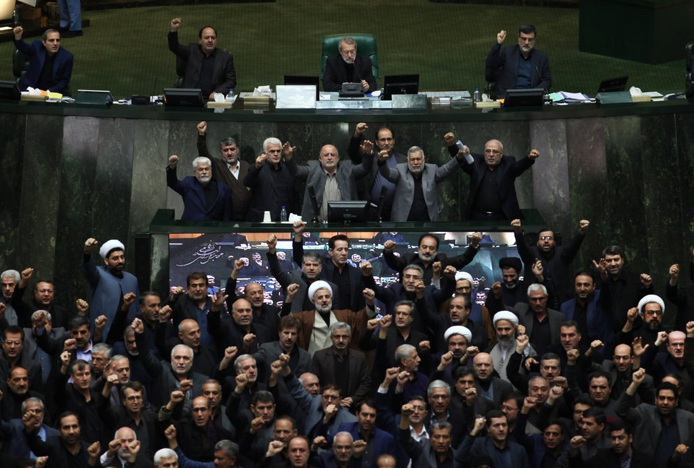

Sau vụ không kích ám sát tư lệnh Iran, nhiều đối tác của Mỹ tại Trung Đông đang mừng thầm khi một đối thủ hùng mạnh bị loại khỏi vòng chiến nhưng cũng lo ngại vì sợ chịu vạ lây.
Suốt nhiều năm, đồng minh của Mỹ trên khắp Trung Đông cáo buộc các kẻ thù của mình trong khu vực được Iran chống lưng. Cường quốc khu vực hỗ trợ xây dựng các kho vũ khí và tài trợ cho nhiều nhóm vũ trang hoạt động gần hoặc ngay trong lãnh thổ các đối tác của Mỹ để đảm bảo lợi ích cho Tehran.
Bộ não đứng sau chiến lược này, tướng Qassem Soleimani, bị Mỹ tiêu diệt trong vụ không kích ngày 3/1 bằng máy bay không người lái ở thủ đô Baghdad, Iraq.
Dù động thái này có thể khiến nhiều đối tác Washington ở khu vực hài lòng, họ chủ yếu vẫn chọn phản ứng bằng sự im lặng, theo đánh giá của New York Times.
Các đối tác của Mỹ ăn mừng âm thầm và dè chừng ra mặt trước cái chết của tướng Soleimani chủ yếu vì hai mối lo ngại cho tương lai. Theo nhiều dự báo, để tránh xung đột vượt kiểm soát với Mỹ, giới lãnh đạo Iran có thể trả thù cho Soleimani bằng cách tấn công đồng minh của Washington.